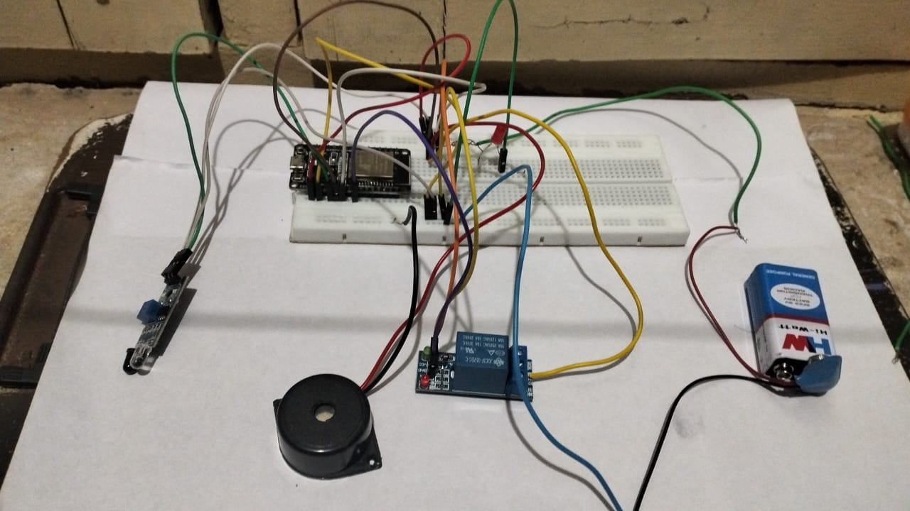

Introduction
This project aims to improve passenger safety by automatically locking and unlocking the bus step depending on whether the bus is moving or stopped.
Purpose
To prevent accidents where passengers fall while boarding or alighting from the bus during motion.
Components Used
- Arduino UNO
- ESP-32 Module
- Relay Channel
- LED and Buzzer
- Resistors and Capacitors
- Power Supply Module
Working Principle
When the bus starts moving, the ESP-32 detects motion or ignition signals and sends a command to the relay module to lock the step. As soon as the bus comes to a stop, the ESP-32 unlocks the step, allowing safe entry and exit of passengers.
Project Layout

Future Improvements
- Integrate GPS to automate locking based on location and speed.
- Add mobile app notification to driver and conductor.
- Use of AI sensors to detect actual step usage.
Conclusion
This system can greatly reduce accidents and improve safety in public buses, especially for children and elderly passengers.